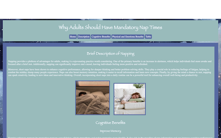
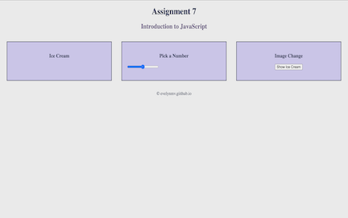

Assignments
Assignment 1 - Basic HTML

Mythological Creatures
An engaging and informative website dedicated to the fascinating world of mythical creatures, featuring detailed descriptions of their enchanting appearances and extraordinary abilities. Explore the rich lore surrounding each creature, from their mesmerizing physical traits to the unique powers they possess, each crafted to captivate the imagination and spark curiosity.
Assignment 2 - Basic CSS
Why Adults Should Have Mandatory Nap Times
Are you curious about the benefits of taking naps as an adult? This informative website explores the numerous advantages of incorporating short periods of rest into your daily routine. From enhancing productivity and improving mood to boosting cognitive function and overall well-being, discover why napping can be a valuable addition to your lifestyle.
Assignment 3 - Page Layout

For this assignment, we developed a visually appealing website that closely matches the mockup provided. Our primary focus was on the layout, utilizing CSS Flexbox to create a responsive design that adapts well to different screen sizes. Additionally, we incorporated Media Queries to ensure optimal viewing experiences across various devices. As part of the project, we selected a cohesive color scheme that enhances the overall aesthetic and usability of the site.
Assignment 4 - Recreate CSS
Recreate CSS
We had a great time taking on the challenge of reimagining the design and functionality of the University of South Carolina's Swimming and Diving website! By diving deep into the original layout and features, we were able to capture the essence of the site while putting our own fun spin on it with our HTML and CSS code. It was a rewarding project that allowed us to blend the original style with our creativity.
Assignment 7 - JavaScript
Introduction to JavaScript
For Assignment 07, we practiced the JavaScript skills we learned in class. The topic was fun: Ice Cream. We had to create a project where, upon clicking a div, a text message would pop up. Then, a number slider would display new text based on the user's input. Additionally, an image would appear when a button was clicked. We also had the opportunity to choose a color scheme for our project.
Assignment 8 - If Statments
JavaScript if Statements and Toggle Menu
For our assignment, we received a detailed layout that outlined the structure we needed to follow. The primary focus was on JavaScript, particularly honing our skills in using if statements and creating toggle menus for improved interactivity. Additionally, we were given the creative freedom to select a color scheme for the webpage, allowing us to enhance the overall visual appeal as we implemented our ideas.
Assignment 9 - For Loops
For Loops
For this assignment, we were tasked with utilizing a specific template and incorporating the provided images to design our unique version of a website. The primary focus of this project was on JavaScript, which we needed to implement effectively to enhance the interactivity and functionality of our site
Assignment 10 - Arrays
Arrays
For this assignment, we were tasked with utilizing a specific template and incorporating the provided images to design our unique version of a website. The primary focus of this project was on JavaScript, which we needed to implement effectively to enhance the interactivity and functionality of our site